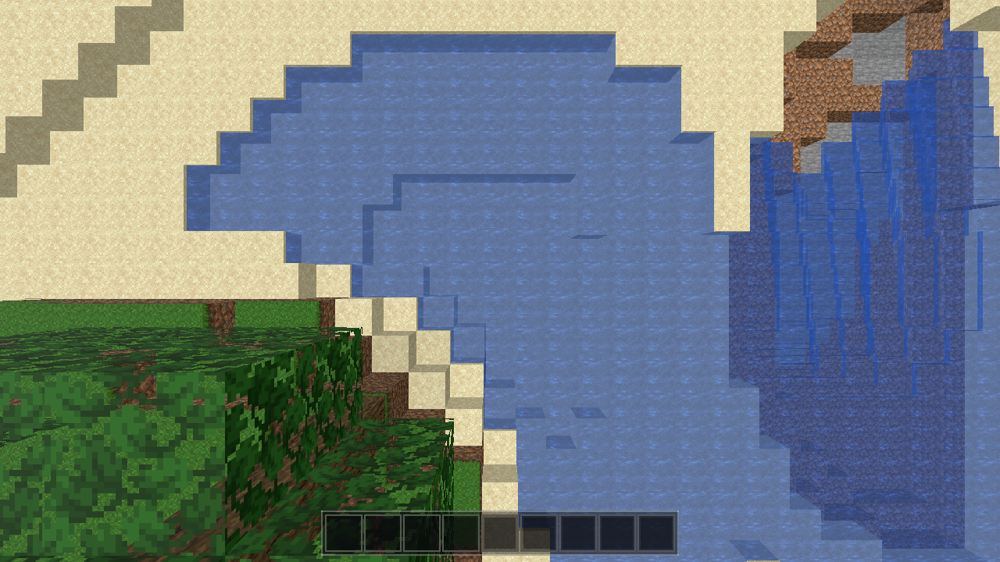
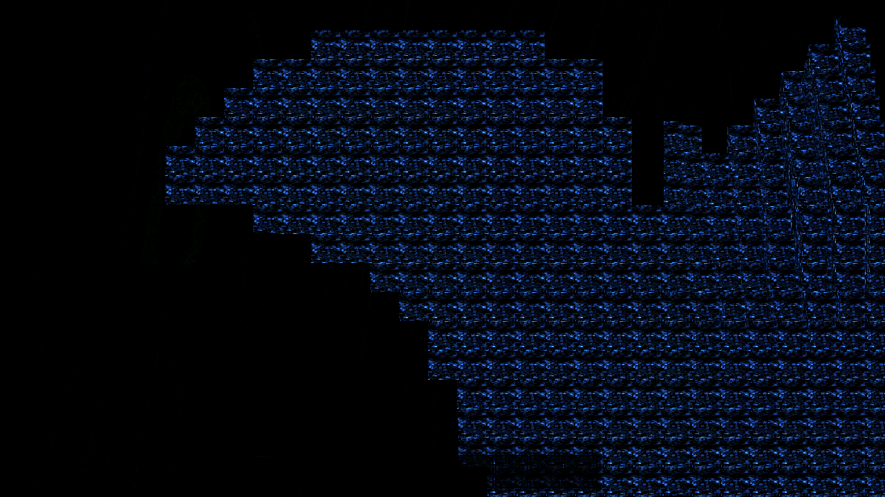
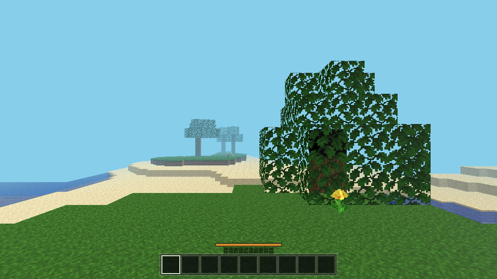
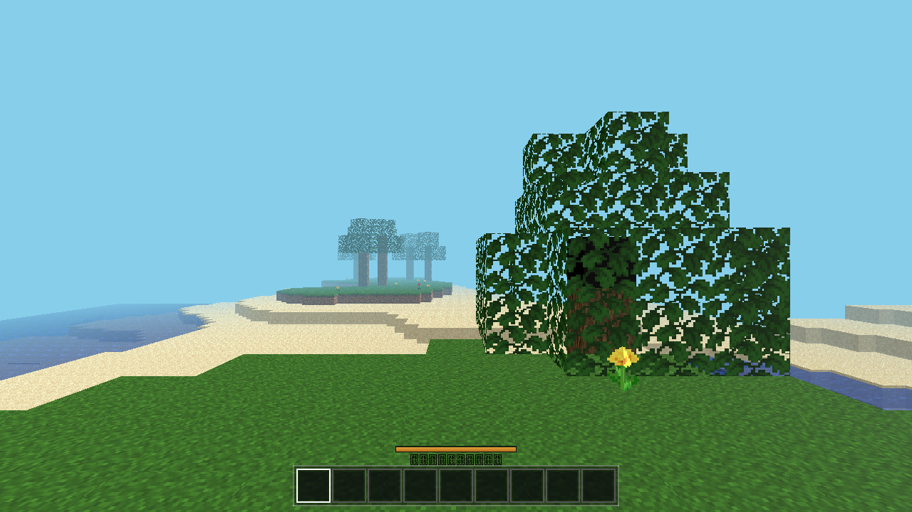
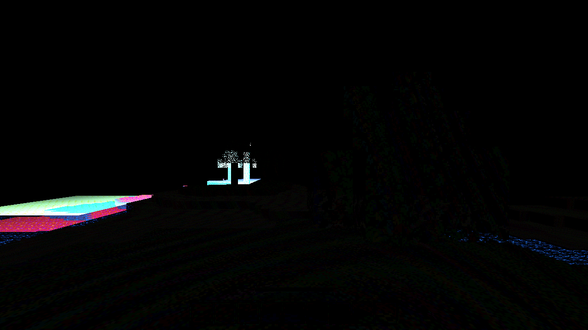

Port the frozen web build's water animation into godot/ with web-exact parameters. Web build was the spec; all fixes in godot/ only.
updateAtlasAnims(dt) re-blits frame idx = floor(elapsed_ms / frametime) into the same atlas tile each flip; sequential cycle idx % N.findAnimJson only parses .animation.json — it ignores Faithful's .mcmeta — so water/lava run at the web default 300 ms/frame.water_still.png = 32×1024 (32 stacked frames), lava_still.png = 32×640 (20 stacked frames). Water frame alpha = 180, lava alpha = 255. Lava animates too (spec had assumed possibly-static).godot/core/atlas.gd: fresh import detects stacked images (width 32, height a multiple of 32), allocates a vertical frame strip (frame 0 = normal tile rect, frames stacked below), records faces["anim"] = N in the atlas JSON.godot/core/fluid_anim.gdshader (new, spatial): frame = mod(floor((TIME + phase) / frame_time), anim_frames); uv.y += frame / 32; ALBEDO = tex.rgb * COLOR.rgb; ALPHA = alpha_scale * tex.a (0.62 for water, over tint-vertex-color).godot/autoload/data.gd: builds one ShaderMaterial per fluid (block 5 → 32 frames @0.3s; block 24 → 20 frames @0.3s).godot/world/chunk.gd: fluid surface records split into standard (torch) / water / lava so each fluid gets its animated material; fallback to standard material if a mat is missing.blocks_atlas.png-3d6da29d…ctex dated 13:14 (old atlas) while the PNG had been regenerated at 20:00; cached source_md5 (0262b2c7…) ≠ current (7419b4fe…). The old atlas happened to have the water tile at the same column, so only frame 0 looked right and frames 1+ sampled empty tiles → water invisible. Fix: purged the stale .ctex/.md5 and force-reimported (godot --headless --path godot --import); md5 now matches, fresh ctex written.| Gate | Result | Evidence |
|---|---|---|
| a. Headless battery | PASS | player/interact/light/fluids/buckets + --quit: 0 script errors. Fluids: sea_stable=true, water_on_lava_result=25, sideways_lava_result=9, bucket scoop/place OK. Re-run after final cleanup: 0 errors. |
| b. Perf (R=…) | PASS | AWECRAFT_LOGIC=perf AWECRAFT_TIMING=1: chunks=81, max_frame_ms=61 ≤ 80 (textured-anim build; baseline was 63 ms). Animation is UV math only, no mesh rebuilds. |
| c. Desktop motion proof | PASS | Top-down render over water cell (0,29,16), phase 0 vs 1.5 (engine T≈20.7 s/21.1 s → frames 5 vs 11): pixel diff full-frame bbox, 98,383 px changed; water renders tinted (96,118,160)→(98,123,172). Below. |
| d. Web build + Playwright | PASS | ./build_web.sh fresh export of final tree (21:59); server https://localhost:8443/ → 200 (pid 45083). Chromium 1280×720, 2 shots 2 s apart: 19,962 px changed, bbox (0,157,1280,720) = ocean band. Only console noise: "Pointer Lock requires user gesture" (expected, headless). Below. |





AWECRAFT_ANIM_SHOT=1 (top-down camera on a water cell near spawn) and AWECRAFT_ANIM_PHASE (shader time-offset to force a known frame window). All debug prints and the shparam probe were removed.